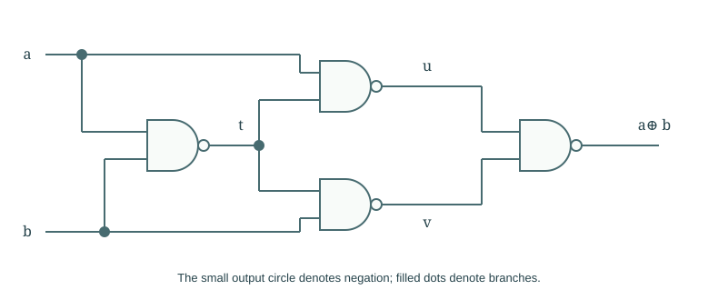
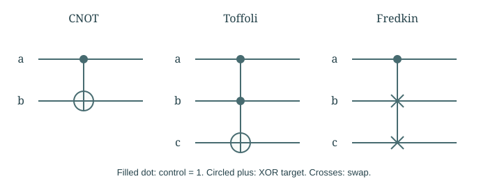
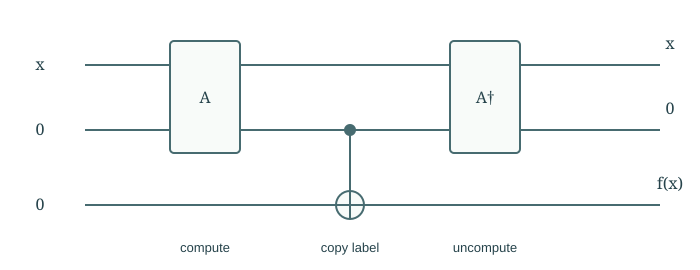

Chapter 02
Boolean and Reversible Computation
A Boolean function specifies an answer, but its implementation may discard the information needed to reconstruct the input. We derive circuits from functions, then construct computations that preserve enough information to be reversed.
In this chapter · 4 sections · 12 topics
2.1
Boolean Functions
Begin with the answer we want before choosing gates to compute it.
2.1.1 Binary encodings§
A finite input can be represented by bits once an encoding is chosen. An integer may use binary digits; a string may encode characters; a graph may list edges. Encoding determines input length, which later affects resource counts. At a fixed length \(n\), there are \(2^n\) possible inputs. If outputs have a fixed bound, they too can be encoded, with padding if necessary. We first study a function on this finite domain. A procedure handling arbitrary lengths requires a systematic family of such functions, not a separate unrelated construction for every length.
2.1.2 Boolean functions and truth tables§
A Boolean function \(f:\{0,1\}^n\to\{0,1\}\) specifies a yes/no answer for each bit string. Its truth table lists all inputs and their outputs. For OR on two bits, the outputs for \(00,01,10,11\) are \(0,1,1,1\). A multi-bit answer is a collection of Boolean output functions. This description specifies what to compute but not how. It hides neither an algorithm nor an efficiency guarantee: writing the full table already takes exponentially many rows in \(n\). We need a way to turn the specification into operations.
2.1.3 Polynomial representation over the binary field§
Work modulo two: addition is XOR, so \(1+1=0\), and multiplication is AND. For a row \(s\), define a detector \[\delta_s(x)=\prod_{i:s_i=1}x_i\prod_{i:s_i=0}(1+x_i).\] It equals one exactly when \(x=s\). Therefore \[f(x)=\bigoplus_{s:f(s)=1}\delta_s(x).\] On any input, at most one included detector is one, so XOR gives the required answer. Expanding produces a polynomial in the input bits. For OR, the expansion simplifies to \(x+y+xy\). Substituting \(x=y=1\) gives \(1\), as required; ordinary integer addition would give the wrong interpretation.
2.2
Boolean Circuits
The polynomial description gives a construction of a circuit, but says little about its size or reversibility.
2.2.1 Polynomial evaluation by circuits§
A circuit evaluates this polynomial by connecting operations: multiply factors with AND, add terms with XOR, and use fixed bits for constants. Wires carry intermediate bits; a gate’s outputs become later inputs. The circuit has no directed cycles, so its gates can be evaluated in order. This construction proves that every fixed-size Boolean function has a circuit. It may use exponentially many gates. Universality—being able to express every function—is a different claim from being able to express every function economically.
2.2.2 NAND universality§
NAND returns \(\neg(a\land b)\). It can build the operations needed above: tying its inputs gives \(\neg a\), and negating a NAND output gives AND. XOR uses four NANDs: \[t=\operatorname{NAND}(a,b),\quad u=\operatorname{NAND}(a,t),\quad v=\operatorname{NAND}(b,t),\quad a\oplus b=\operatorname{NAND}(u,v).\] Checking the four input pairs verifies the last identity. Since NAND constructs AND, XOR, and negation, it evaluates the polynomial for any Boolean function. Classical fan-out is allowed here: the same bit may feed several gates. This is not yet a reversible construction.

2.2.3 Irreversible Boolean operations§
An AND output of zero could have come from \(00\), \(01\), or \(10\). If only the output remains, those inputs cannot be distinguished. The map is many-to-one and has no inverse. This is logical information loss, regardless of whether the gate was useful. A complicated circuit may implement a one-to-one overall input–output function while erasing internal records along the way. An overall reversible truth table does not by itself establish that each physical step is reversible or avoids dissipation.
2.3
Information Erasure
Erasing distinctions has a physical significance as well as a logical one.
2.3.1 Landauer’s principle§
A bit lives in a physical system. Resetting an unknown bit to zero merges two logical possibilities. Landauer’s principle assigns a minimum average heat cost \(k_{\mathrm B}T\ln2\) to erasing one unbiased bit in the usual thermal setting, without retaining a compensating record. Here \(T\) is temperature and \(k_{\mathrm B}\) is Boltzmann’s constant. The conditions matter: known bits, biased distributions, and available correlations change the information that must be erased. The principle is not a fixed energy charge on every logical gate. Its role here is to connect lost information to physical resources.
Further detail: Bennett: Landauer’s principle and reversible computation.
2.3.2 Logical reversibility and dissipation§
A logically reversible map is one-to-one on its allowed states. It avoids the necessity of erasure at the level of that map, but a real implementation can still dissipate energy through resistance, friction, control, and imperfect operation. Conversely, an irreversible gate cannot be made logically invertible merely by operating it slowly. We must distinguish the mathematical map from its physical realization. Quantum unitary evolution will supply another reason for preserving information: it has an inverse. Measurement and interaction with an environment require a different description.
2.3.3 Reversible function embeddings§
Any Boolean function can be embedded in a reversible operation by retaining its input: \[U_f:(x,y)\mapsto(x,y\oplus f(x)).\] Applying it twice restores \(y\), because XOR with the same bit twice cancels. With \(y=0\), the second register becomes the answer. Reversibility does not require \(f\) itself to be injective: the retained \(x\) distinguishes the original inputs. Extra bits are therefore not incidental bookkeeping. They are part of the state needed to make the full transformation one-to-one.
2.4
Reversible Gates
Retained controls and reversible target updates provide useful building blocks.
2.4.1 Controlled reversible operations§
A controlled operation retains a control value while reversibly updating a target. CNOT maps \((a,b)\) to \((a,b\oplus a)\). When \(a=0\), nothing changes; when \(a=1\), the target flips. In either case, the same operation undoes the change. Control is not synonymous with reversibility: the target operation must itself be reversible for every retained control value. This example introduces a useful design method—choose among invertible updates without discarding which update was chosen.
2.4.2 CNOT, Toffoli, and Fredkin gates§
Toffoli maps \((a,b,c)\) to \((a,b,c\oplus ab)\). A zero target records AND while preserving its inputs. Fredkin retains a control and swaps two targets when that control is one. Both are their own inverses. Toffoli with initialized workspace can implement general reversible Boolean computations; CNOT alone cannot produce the nonlinear term \(ab\). In circuit drawings a filled dot denotes a control on one, and a circled plus denotes an XOR target. A vertical connector means these symbols belong to one joint gate.

2.4.3 Workspace and uncomputation§
A reversible calculation often yields \((x,f(x),g(x))\), where \(g(x)\) is temporary “garbage.” Resetting it would erase information. Instead, compute, XOR the result into a clean output register, and run the computation backward: \[(x,0,0)\to(x,f(x),g(x))\to(x,f(x),g(x);f(x))\to(x,0,0;f(x)).\] The notation groups workspace schematically; only the copied answer remains in the fresh register. In a quantum computation this copies basis labels coherently, not an arbitrary unknown state. Uncomputation becomes essential when unwanted workspace records would obstruct interference.
